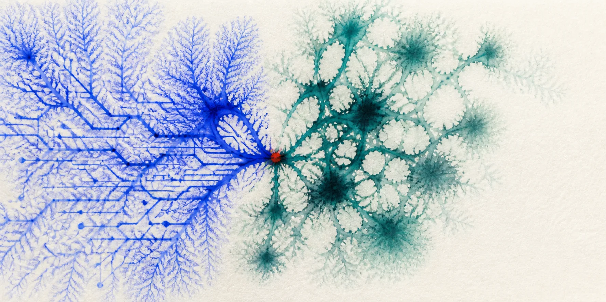

Roberto Montalti ~rhighs posts quotes resources  Roberto Montalti Software Engineer trying to figure out how things work. Slowly making my way through bioinformatics between unimi and polimi. About My interests wander. I like patterns and problems a bit beyond me. This is where I leave things lying around. Links TwitterGitHubCodebergEmailLinkedIn
~rhighs postsquotesresources Roberto Montalti Software engineer studying bioinformatics. Trying to figure out how things work. Slowly making my way through bioinformatics between unimi and polimi. About My interests wander. I like patterns and problems a bit beyond me. This is where I leave things lying around. Links TwitterGitHubCodebergEmailLinkedIn
Roberto Montalti~rhighs PostsQuotesResources Roberto Montalti Software Engineer trying to figure out how things work. Slowly making my way through bioinformatics between unimi and polimi. About My interests wander. I like patterns and problems a bit beyond me. This is where I leave things lying around. Links TwitterGitHubCodebergEmailLinkedIn
Roberto Montalti~rhighs postsquotesresources Roberto Montalti Software Engineer trying to figure out how things work. Slowly making my way through bioinformatics between unimi and polimi. About My interests wander. I like patterns and problems a bit beyond me. This is where I leave things lying around. Links TwitterGitHubCodebergEmailLinkedIn
Roberto Montalti~rhighs postsquotesresources Roberto Montalti Software Engineer trying to figure out how things work. Slowly making my way through bioinformatics between unimi and polimi. About My interests wander. I like patterns and problems a bit beyond me. This is where I leave things lying around. Links TwitterGitHubCodebergEmailLinkedIn